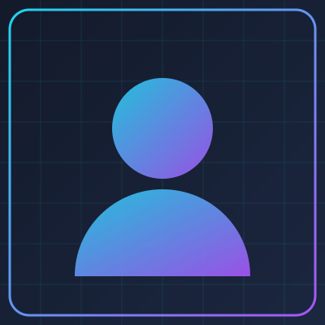

Ciência da Computação
2024 — cursando
Graduação com foco em programação, algoritmos e desenvolvimento web.
Olá, visitante!

Estudante de Ciência da Computação
Tenho 22 anos, moro em Videira (Santa Catarina) e estudo desenvolvimento web. Gosto de criar interfaces simples, organizadas e que funcionem bem em qualquer tela. No momento estudo HTML, CSS e JavaScript na aula de Programação IV.
2024 — cursando
Graduação com foco em programação, algoritmos e desenvolvimento web.
2023
Curso online de 60 horas sobre HTML, CSS e JavaScript básico.
2023 — 2024
Ajudei outros alunos com dúvidas de programação e manutenção dos computadores.